Documentazione
Progetto Point of Interest
L'obiettivo del progetto POI (Point Of Interest) è la realizzazione di un'applicazione web che mostra un insieme di punti di interesse presenti su una mappa relativi a un determinato tema o soggetto. Nel nostro caso andremo ad analizzare i maggiori punti di interesse della guerra civile spagnola.
Tema specifico del gruppo: Guerra civile spagnola - Classe: 5B INF.
- Classe/Anno: 5B INF - 24/25
- Autori: Marco Garello, Federico Saggioro, Fabio Contessotto
- Creato: 16 dicembre 2024
- Ultima modifica: 30 dicembre 2024
Architettura informazione
Il progetto include la creazione di una SPA che permette di navigare attraverso diverse pagine/sezioni, inclusa una mappa interattiva e un elenco dettagliato di punti di interesse. L'utente può selezionare un punto di interesse èresente sulla mappa che poi andrà ad aprire un'altra SPA dettagliata degli avvenimenti e le informazioni degli attributi dal nostro gruppo scelti per la rappresentazione di esse.
UML
Questa sezione include i diagrammi UML per i casi d'uso, gli oggetti, gli stati e le sequenze. (Da aggiornare una volta completati i file)
Diagramma di Casi d'uso
Il diagramma rappresenta la navigazione utente attraverso le diverse sezioni del sito.

Diagrammi di oggetti
Rappresentazione delle relazioni tra i dati strutturati e gli oggetti coinvolti.

Diagrammi di Stato
Diagramma che mostra lo stato e le transizioni dei punti di interesse.


Diagrammi di Sequenza
Diagramma che descrive il flusso delle operazioni nella SPA.


Contenuti del progetto
| Titolo | Luogo | Evento | Descrizione | Data inizio | Data fine | Morti | Feriti | Forze in campo | Personaggi chiave | Conseguenze | Com'è la città oggi | Foto1 | Foto2 | Foto3 |
|---|---|---|---|---|---|---|---|---|---|---|---|---|---|---|
| Alzamiento e Battaglia di Melilla | Melilla, Marocco spagnolo | Primo colpo di Stato militare che diede inizio alla guerra | Il 17 luglio 1936, l'esercito spagnolo d'Africa, stanziato a Melilla, si sollevò contro il governo della Seconda Repubblica Spagnola. Questo evento segnò l'inizio della Guerra Civile Spagnola. La ribellione fu rapida ed efficace, con le forze nazionaliste che presero il controllo della città senza incontrare una resistenza significativa. L'insurrezione si estese rapidamente ad altre guarnigioni nel Marocco spagnolo e, il giorno successivo, al resto della Spagna. Il successo iniziale a Melilla fu fondamentale per i nazionalisti, poiché permise loro di stabilire una testa di ponte sicura da cui coordinare ulteriori operazioni militari. Inoltre, il controllo del Marocco spagnolo garantì l'accesso alle truppe coloniali, tra cui la Legione Straniera e le truppe indigene marocchine (i "Regulares"), che svolsero un ruolo cruciale nel conflitto. La rapida diffusione dell'insurrezione evidenziò le profonde divisioni politiche e sociali presenti in Spagna, portando il paese in una guerra civile che sarebbe durata fino al 1939. | 17 Luglio 1936 | 18 Luglio 1936 | Sconosciuto con certezza | Sconosciuto con certezza | Esercito spagnolo d'Africa (nazionalisti) vs forze lealiste repubblicane. | Francisco Franco, Emilio Mola | Scoppio della Guerra Civile Spagnola, divisione del paese e inizio di un conflitto che durò tre anni. | Melilla è una città autonoma spagnola situata sulla costa nordafricana. Conserva un ricco patrimonio storico e culturale, con influenze sia europee che nordafricane. La città è nota per la sua architettura modernista e le fortificazioni storiche. | 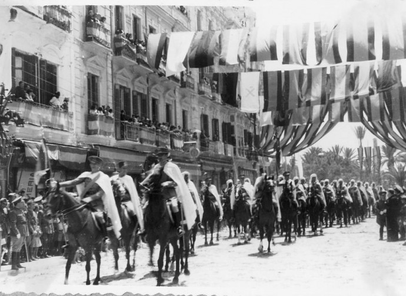 |  |
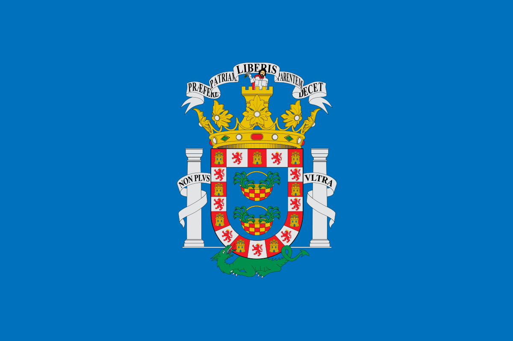 |
| Assedio all’Alcazar di Toledo | Toledo | Lunga resistenza dei nazionalisti asserragliati nell’Alcazar | L'Assedio dell'Alcázar di Toledo fu uno degli episodi più simbolici della Guerra Civile Spagnola. Dopo l'inizio del conflitto nel luglio 1936, un gruppo di circa 1.000 nazionalisti, tra cui soldati, guardie civili e civili, si rifugiò nell'Alcázar, un'antica fortezza situata sulla sommità di Toledo. Le forze repubblicane circondarono rapidamente la fortezza, dando inizio a un assedio che durò oltre due mesi. Nonostante i continui bombardamenti e gli attacchi, i difensori, guidati dal colonnello José Moscardó, resistettero strenuamente. Un episodio particolarmente drammatico avvenne quando i repubblicani catturarono il figlio di Moscardó, minacciando di ucciderlo se il colonnello non si fosse arreso; Moscardó rifiutò, e suo figlio fu successivamente giustiziato. Il 27 settembre 1936, le forze nazionaliste guidate dal generale José Enrique Varela riuscirono a rompere l'assedio e a liberare l'Alcázar. Questo evento divenne un potente simbolo della determinazione nazionalista e fu ampiamente utilizzato nella propaganda franchista per galvanizzare il sostegno alla causa. | 21 Luglio 1936 | 27 Settembre 1936 | Circa 1.300, inclusi combattenti e civili. | Sconosciuto con certezza. | Forze repubblicane vs. nazionalisti asserragliati nell'Alcázar. | Colonnello José Moscardó e Generale José Enrique Varela. | Vittoria simbolica per i nazionalisti, rafforzamento del morale e della propaganda franchista. | Toledo è una città storica e patrimonio dell'umanità UNESCO, famosa per la sua architettura medievale e la coesistenza di culture cristiana, musulmana ed ebraica. L'Alcázar è stato ricostruito ed è sede del Museo dell'Esercito. | 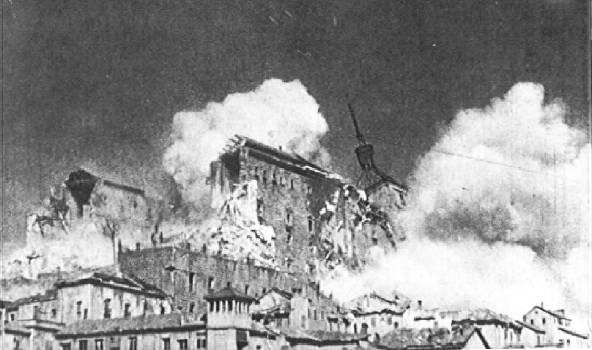 | 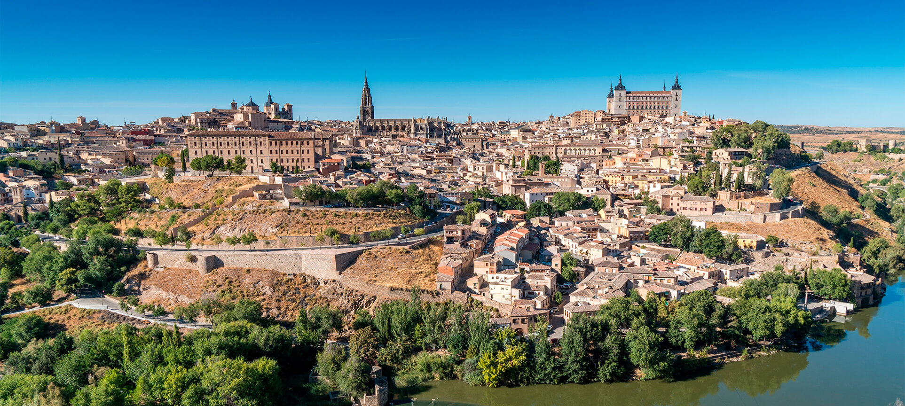 | 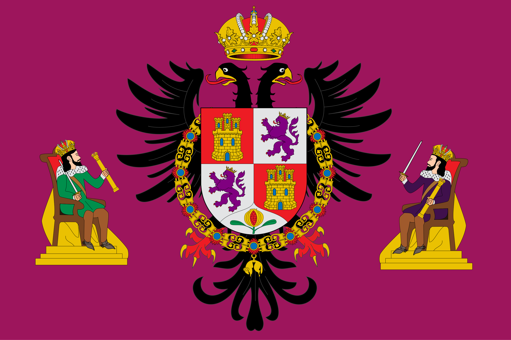 |
| Battaglia di Madrid | Madrid | Primo grande assalto nazionalista alla capitale. | La Battaglia di Madrid rappresentò uno dei momenti più intensi e cruciali della Guerra Civile Spagnola. Dal novembre 1936 al marzo 1939, le forze nazionaliste, guidate da Francisco Franco, lanciarono una serie di attacchi contro la capitale spagnola, considerata un simbolo della resistenza repubblicana. Gli scontri iniziarono con un massiccio bombardamento e avanzarono rapidamente verso i sobborghi della città. Nonostante la superiorità militare iniziale dei nazionalisti, la popolazione di Madrid, sostenuta dalle milizie popolari e dalle Brigate Internazionali, oppose una strenua resistenza. I cittadini organizzarono barricate, scavarono trincee e parteciparono attivamente ai combattimenti. La propaganda repubblicana mobilitò la popolazione con lo slogan "¡No pasarán!" ("Non passeranno!"), che divenne il grido di battaglia dei difensori. Durante la battaglia, i repubblicani ricevettero supporto dall'Unione Sovietica, che fornì armi e consiglieri militari, mentre i nazionalisti furono sostenuti da Germania e Italia. La battaglia terminò con un impasse: Madrid rimase sotto il controllo repubblicano, ma le linee del fronte si stabilizzarono, trasformando il conflitto in una guerra di logoramento. | Novembre 1936 | Marzo 1939 | Migliaia su entrambi i lati (Sconosciuto con certezza, si presume la maggioranza delle vittime totali della guerra) | Numerosi (Sconosciuto con certezza) | Nazionalisti: Truppe franchiste, supportate da aviazione Tedesca e Italiana. Repubblicani: Esercito regolare, milizie popolari, Brigate internazionali. | Francisco Franco, josé Miaja | Madrid rimase sotto controllo repubblicano. Intensificazione del conflitto e aumento del coinvolgimento internazionale. Distruzione diffusa nella città | Capitale della Spagna, la città si è ripresa dall'epoca di guerriglia civile ed è considerata una delle più belle mete turistiche della penisola. | 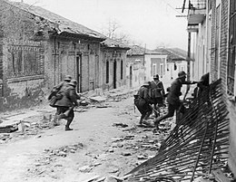 | 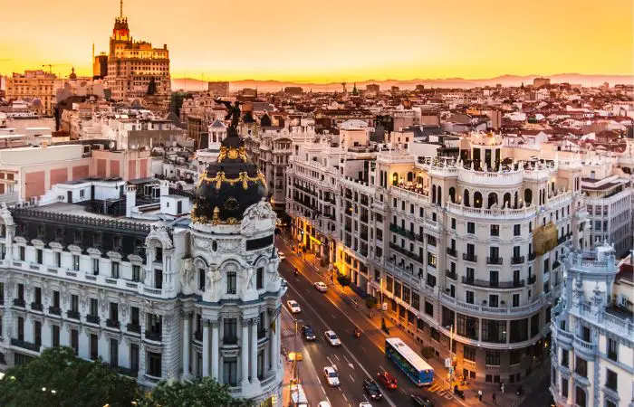 | 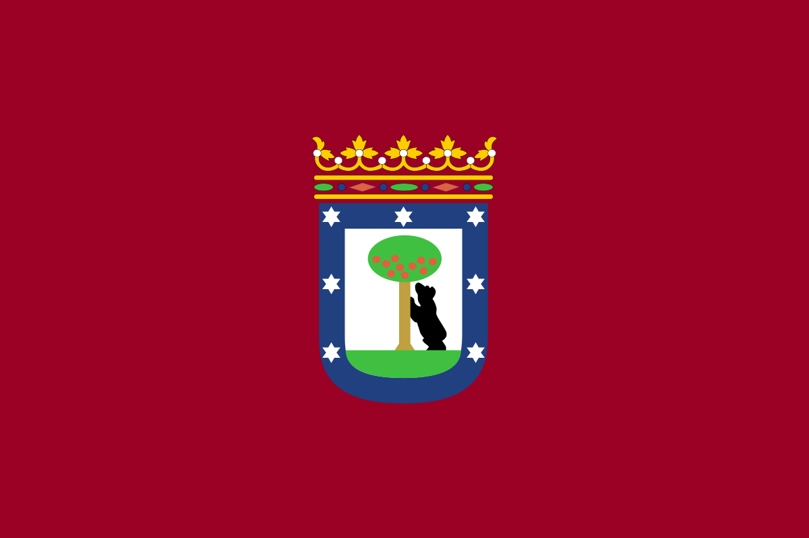 |
| Battaglia del Jarama | Fiume vicino Madrid | Tentativo nazionalista di interrompere le comunicazioni repubblicane | La Battaglia del Jarama, combattuta dal 6 al 27 febbraio 1937, fu un'importante offensiva militare durante la Guerra Civile Spagnola. Le forze nazionaliste, sotto il comando di Francisco Franco, cercarono di tagliare le linee di comunicazione tra Madrid e le forze repubblicane, approfittando della loro superiorità numerica e della strategia di attacco. Le forze repubblicane, guidate dal generale Enrique Líster, si opposero strenuamente, cercando di mantenere il controllo della zona strategica attorno al fiume Jarama. La battaglia si distinse per la sua brutalità e per le pesanti perdite subite da entrambe le parti. I combattimenti furono caratterizzati da attacchi frontali, bombardamenti aerei e scontri ravvicinati, con una grande mobilitazione di truppe e risorse. Nonostante le pesanti perdite, i repubblicani riuscirono a mantenere il controllo della maggior parte della linea del fronte, ma la battaglia si concluse in un sostanziale stallo strategico. Le perdite furono enormi, con stime che parlano di circa 20.000 morti e feriti. La battaglia del Jarama evidenziò la determinazione di entrambe le fazioni e il costo umano del conflitto, segnando un punto di svolta nella guerra. | 6 Febbraio 1937 | 27 Febbraio 1937 | Circa 20.000 | Sconosciuto con certezza | Repubblicani vs. Nazionalisti | Francisco Franco, Enrique Líster | Stallo strategico con perdite enormi | La zona del fiume Jarama è oggi un'area rurale e naturale, con paesaggi verdi e colline ondulate. La memoria della battaglia è preservata in vari monumenti e memoriali, che ricordano le vittime e gli eventi della guerra. La zona è anche nota per la sua importanza storica e culturale, con siti archeologici e monumenti che risalgono a epoche precedenti. | 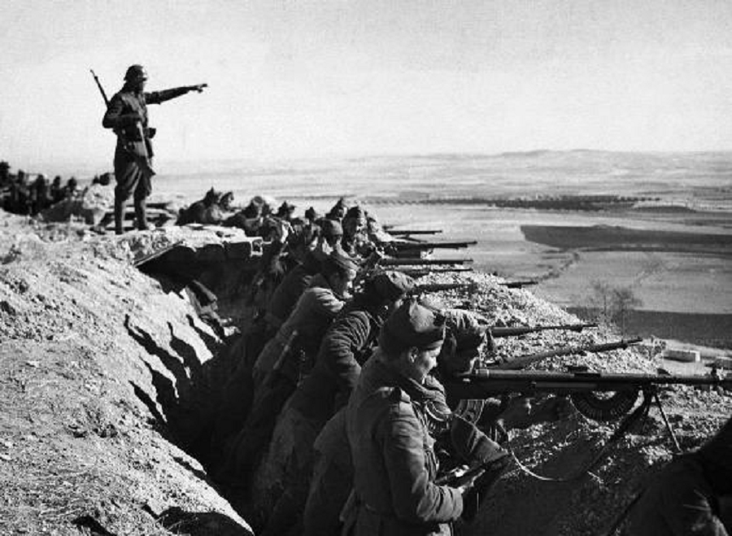 |  |
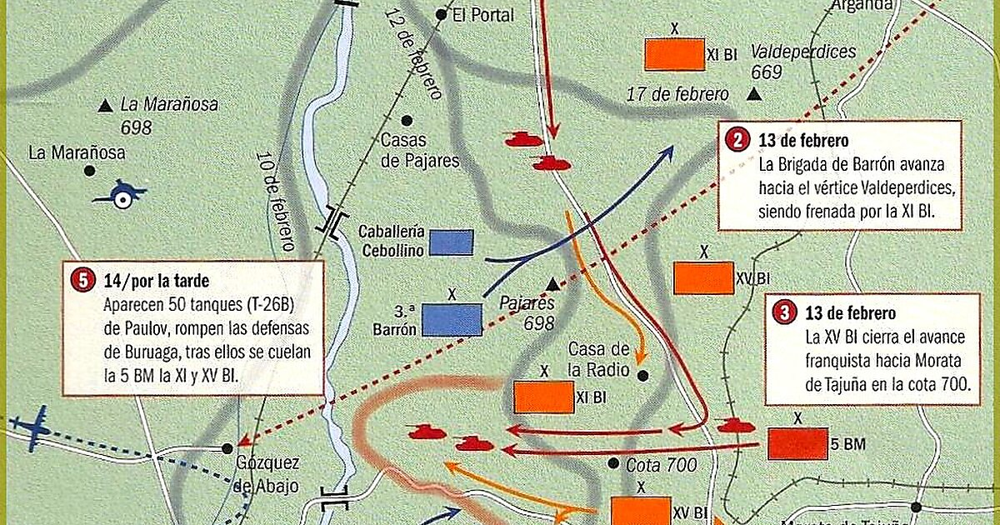 |
| Bombardamento di Guernica | Guernica, Paesi Baschi | Bombardamento aereo nazista e italiano sulla città basca | Il 26 aprile 1937, Guernica, una piccola città nei Paesi Baschi, fu devastata da un bombardamento aereo coordinato dalla Luftwaffe tedesca e dall'aviazione italiana. L'attacco, volto a terrorizzare la popolazione civile e a distruggere le infrastrutture nemiche, si svolse in più ondate e provocò incendi devastanti. Guernica era considerata un simbolo della cultura basca e un importante centro politico per il governo repubblicano nella regione. Il bombardamento, che causò la morte di centinaia di civili, suscitò indignazione internazionale e divenne un simbolo degli orrori della guerra moderna. L'evento ispirò il famoso dipinto "Guernica" di Pablo Picasso, che rappresenta il dolore e la distruzione causati dall'attacco. | 26 Aprile 1937 | 26 Aprile 1937 | Circa 1500 | Sconosciuto con certezza | Aviazione nazista e italiana contro civili | Adolf Hitler (supporto tedesco), Francisco Franco | Indignazione internazionale Rafforzamento della resistenza repubblicana e del movimento per l’autonomia basca Icona artistica e politica contro la guerra | Guernica è oggi un luogo di memoria e resistenza, con un museo dedicato alla pace e monumenti commemorativi. | 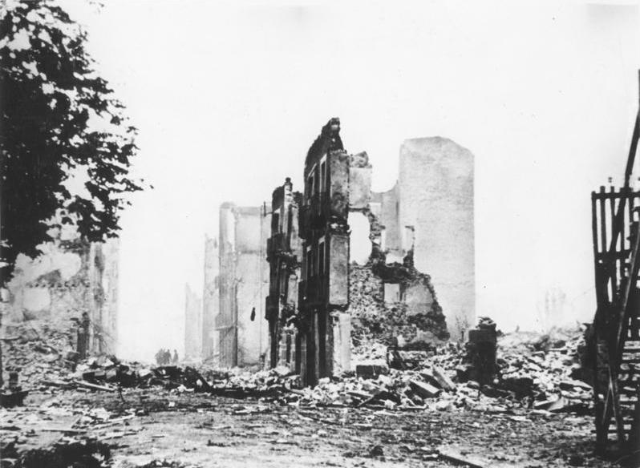 | 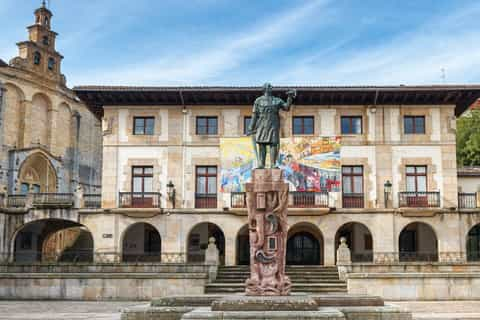 | 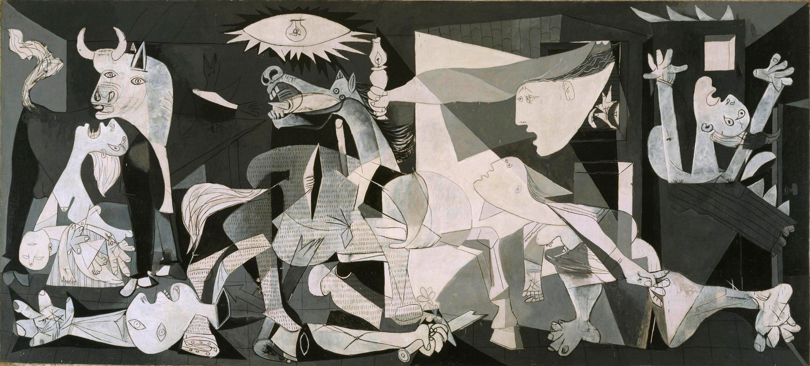 |
| Battaglia di Belchite | Belchite, Aragona | Assalto repubblicano per rompere le linee nazionaliste | La Battaglia di Belchite, combattuta tra il 24 agosto e il 6 settembre 1937, fu parte di un’offensiva repubblicana volta a conquistare terreno strategico in Aragona. La città di Belchite, piccola ma fortificata, divenne il fulcro di un assalto brutale. I repubblicani, guidati da generali come Enrique Líster, concentrarono grandi forze sulla città nel tentativo di dimostrare la loro capacità di passare all’offensiva. Lo scontro fu caratterizzato da combattimenti casa per casa, bombardamenti incessanti e una resistenza feroce da parte dei nazionalisti. Dopo giorni di battaglie sanguinose, Belchite fu infine conquistata dai repubblicani, ma al costo di pesanti perdite. La città rimase praticamente distrutta e divenne un simbolo della devastazione della guerra. Tuttavia, l’operazione non riuscì a ottenere un vantaggio strategico duraturo, poiché i nazionalisti, meglio organizzati, recuperarono il controllo della regione nelle settimane successive. | 24 Agosto 1937 | 6 Settembre 1937 | Sconosciuto con certezza | Sconosciuto con certezza | Repubblicani: Esercito regolare, Brigate internazionali Nazionalisti: Truppe locali e rinforzi di Francisco Franco | Enrique Líster, Juan Vigón | Vittoria temporanea dei repubblicani Distruzione totale di Belchite, mai ricostruita completamente Consolidamento delle forze nazionaliste nell’Aragona | Belchite è oggi un sito storico, con le rovine lasciate intatte come memoriale della guerra civile. Esiste una nuova Belchite costruita accanto alle rovine della città vecchia. | 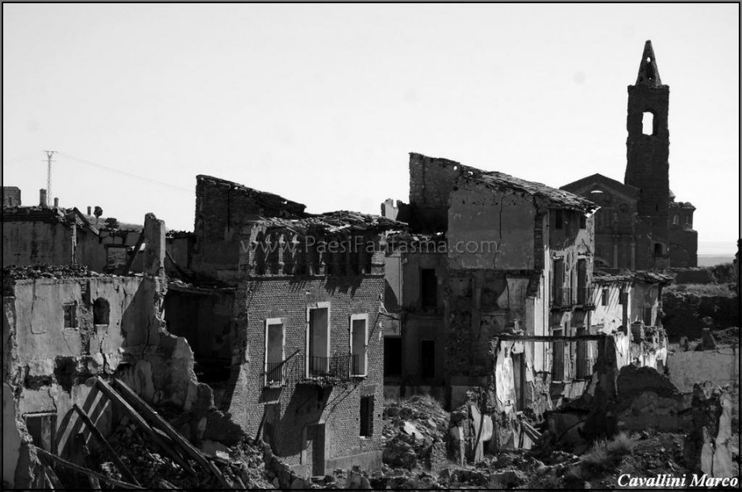 | 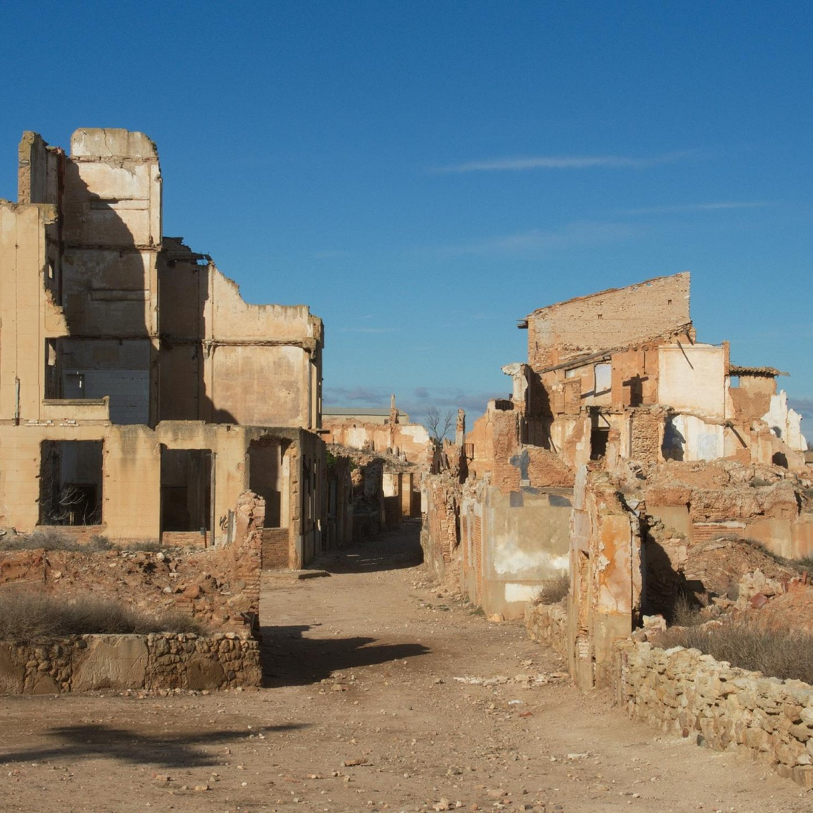 | 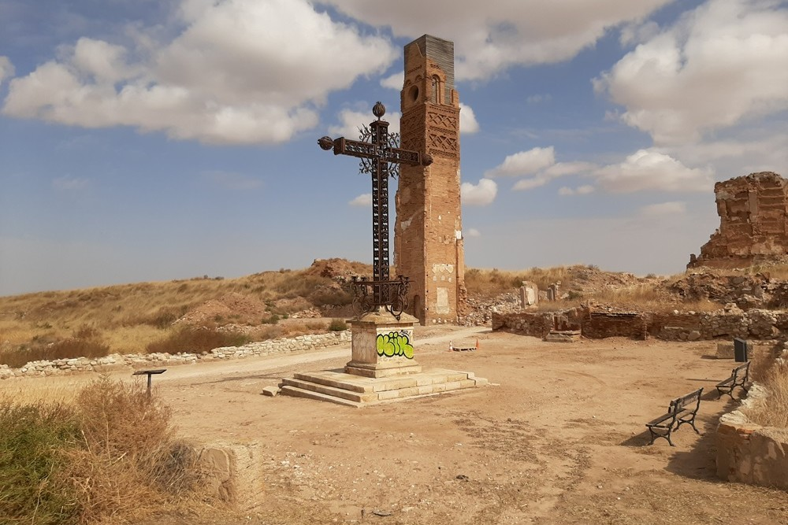 |
| Bombardamento di Barcellona | Barcellona | Bombardamento aereo nazionalista sulla città | Il Bombardamento di Barcellona rappresenta uno degli eventi più drammatici e devastanti della Guerra Civile Spagnola. Iniziato nel 1937 e continuato fino al 1939, il bombardamento della capitale catalana fu parte della strategia dei nazionalisti di Francisco Franco per indebolire le forze repubblicane e seminare il panico tra la popolazione civile. Le forze aeree nazionaliste, supportate dalla Legione Condor tedesca e dall'aviazione italiana, condussero attacchi aerei sistematici sulla città, colpendo obiettivi militari, ma anche aree residenziali e civili. Uno dei bombardamenti più devastanti avvenne il 17 marzo 1938, quando circa 200 aerei attaccarono Barcellona, causando la morte di oltre 1.000 persone e ferendone molte altre. Le immagini di distruzione e sofferenza furono amplificate dalla propaganda repubblicana, che cercò di mobilitare l'opinione pubblica internazionale contro il regime di Franco. Il bombardamento di Barcellona non solo inflisse gravi danni alla città, ma rappresentò anche un attacco diretto alla cultura e all'identità catalana, suscitando una forte reazione tra la popolazione. La resistenza dei cittadini di Barcellona divenne un simbolo della lotta contro il fascismo, e la città continuò a essere un bastione della Repubblica fino alla sua caduta nel gennaio 1939. | 17 Marzo 1938 | 1 Gennaio 1939 (con bombardamenti fino alla fine della Guerra) | Oltre 1.000 (stima dopo i principali bombardamenti) | Sconosciuto con certezza | Aviazione nazionalista, Legione Condor tedesca e aviazione italiana contro la popolazione civile e le forze repubblicane. | Francisco Franco, Adolf Hitler (supporto tedesco), Benito Mussolini (supporto italiano), civili della città. | Distruzione diffusa della città, aumento della sofferenza civile e mobilitazione dell'opinione pubblica internazionale contro il regime franchista. | Barcellona è oggi una delle città più vibranti e visitate d'Europa, con un ricco patrimonio culturale e architettonico. I segni della guerra sono stati in gran parte superati, ma la memoria storica è preservata in vari musei e monumenti dedicati alla guerra e alla resistenza. | 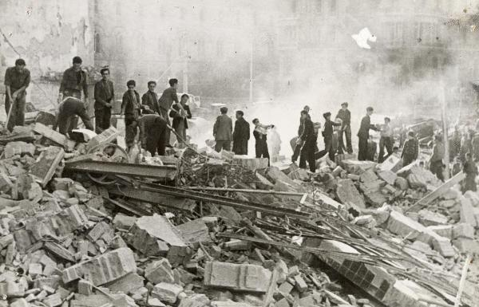 | 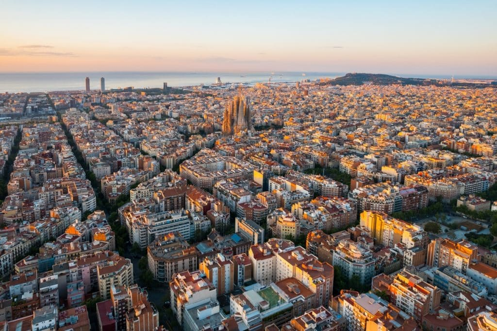 | 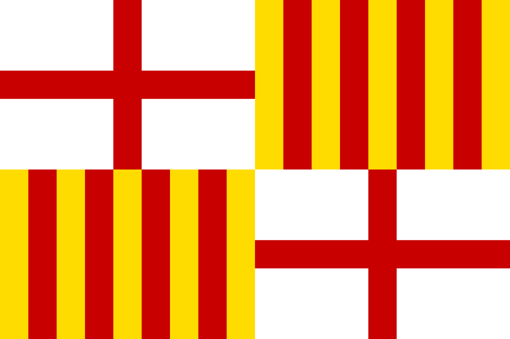 |
| Battaglia dell’Ebro | Valle dell’Ebro, Catalogna | Ultima grande offensiva repubblicana | La Battaglia dell’Ebro, svoltasi tra il 25 luglio e il 16 novembre 1938, fu l’offensiva più lunga e sanguinosa della Guerra Civile Spagnola. I repubblicani, in una disperata manovra per invertire le sorti del conflitto, attraversarono il fiume Ebro e attaccarono le forze nazionaliste. Inizialmente, i repubblicani ottennero successi significativi, conquistando diverse posizioni strategiche. Tuttavia, la superiorità aerea e logistica dei nazionalisti, insieme alla loro capacità di mobilitare rinforzi, si rivelò decisiva. Dopo mesi di combattimenti estenuanti, i repubblicani furono costretti a ritirarsi, subendo perdite devastanti. La sconfitta nell’Ebro segnò la fine delle speranze repubblicane di ribaltare la guerra, aprendo la strada alla vittoria nazionalista. | 25 Luglio 1938 | 16 Novembre 1938 | Oltre 100.000(Sconosciuto con certezza) | Sconosciuto con certezza | Repubblicani: Truppe regolari e Brigate Internazionali Nazionalisti: Esercito di Francisco Franco, supporto aereo italiano e tedesco | Juan Modesto, Francisco Franco | Vittoria decisiva per i nazionalisti Perdita delle ultime riserve repubblicane Fine delle Brigate Internazionali | La valle dell'Ebro è un'area agricola e turistica, con memoriali che ricordano i combattimenti. | 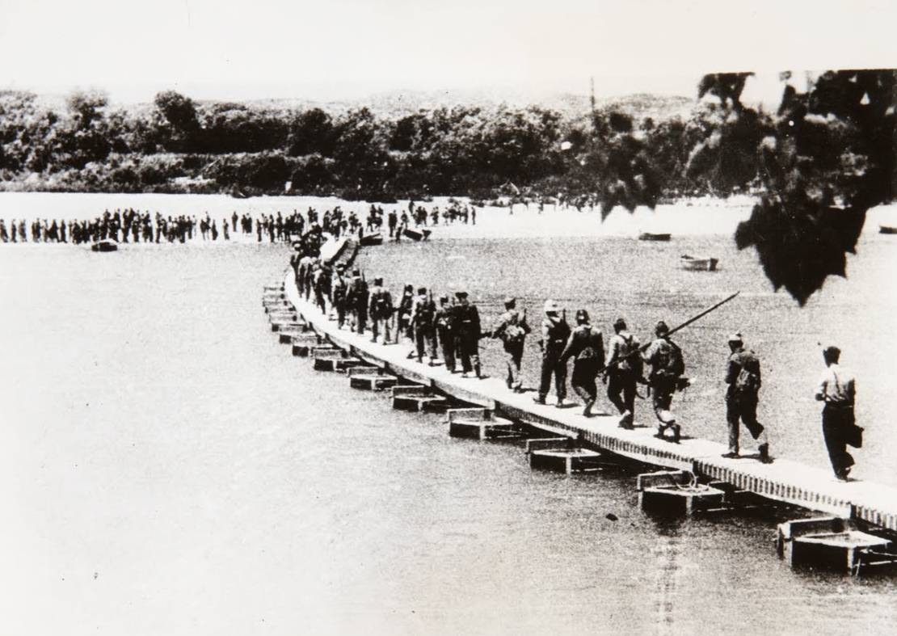 | 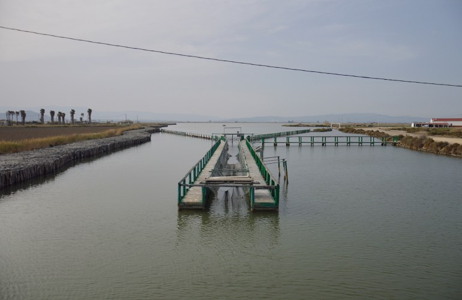 | 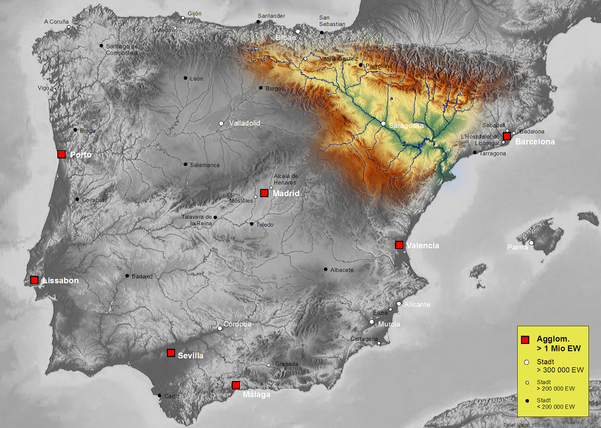 |
| Assedio di Barcellona | Barcellona | Assedio finale delle forze nazionaliste sulla città | L'Assedio di Barcellona, che ebbe luogo tra gennaio e gennaio 1939, rappresenta uno degli eventi culminanti della Guerra Civile Spagnola. Dopo anni di conflitto, le forze nazionaliste di Francisco Franco lanciarono un'offensiva decisiva per conquistare la capitale catalana, che era rimasta un bastione della resistenza repubblicana. L'assedio iniziò con un intenso bombardamento aereo e artiglieria, che devastò gran parte della città e inflisse gravi danni alle infrastrutture. Le forze repubblicane, già indebolite e in difficoltà a causa della mancanza di rifornimenti e supporto internazionale, cercarono di resistere con tutte le loro forze. La popolazione civile, che aveva già subito pesanti bombardamenti, si trovò a fronteggiare una situazione disperata. Nonostante la determinazione dei difensori, le forze nazionaliste avanzarono rapidamente, e il morale delle truppe repubblicane crollò. Il 26 gennaio 1939, Barcellona cadde definitivamente nelle mani dei nazionalisti, segnando una sconfitta decisiva per la Repubblica. L'assedio non solo portò alla caduta di una delle città più importanti della Spagna, ma segnò anche l'inizio della fine per il governo repubblicano, che si sarebbe concluso con la vittoria di Franco nel marzo dello stesso anno. | 26 Gennaio 1939 | 26 Gennaio 1939 | Migliaia (stima imprecisa, ma si parla di circa 10.000 tra combattenti e civili). | Sconosciuto con certezza | Forze nazionaliste contro le forze repubblicane. | Francisco Franco, José Miaja (comandante repubblicano). | Caduta di Barcellona e consolidamento del potere di Franco, che portò alla fine della Guerra Civile Spagnola e all'instaurazione di un regime dittatoriale. | Barcellona è oggi una delle città più vibranti e visitate d'Europa, con un ricco patrimonio culturale e architettonico. I segni della guerra sono stati in gran parte superati, ma la memoria storica è preservata in vari musei e monumenti dedicati alla guerra e alla resistenza. | 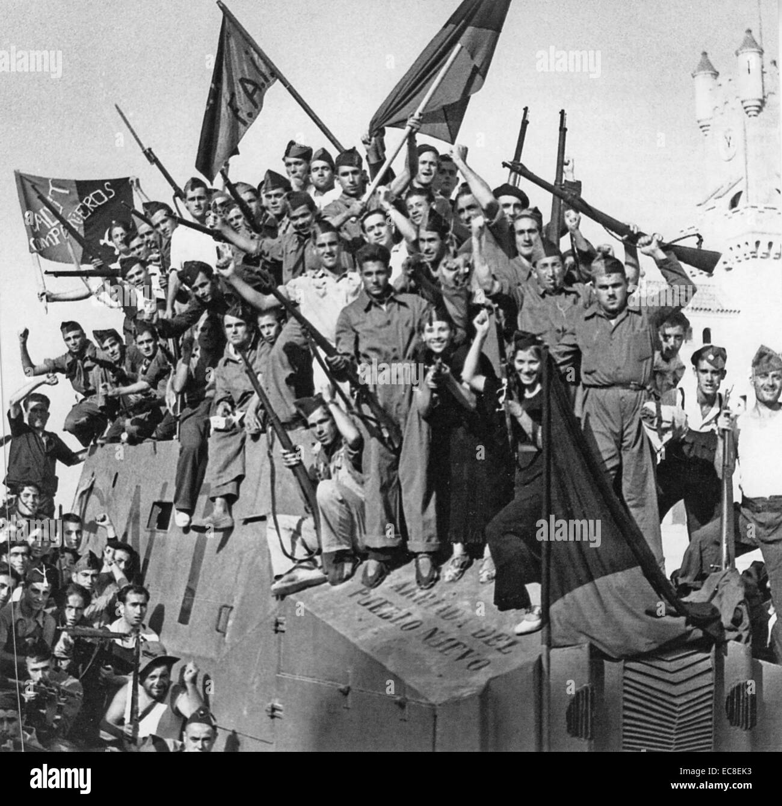 | 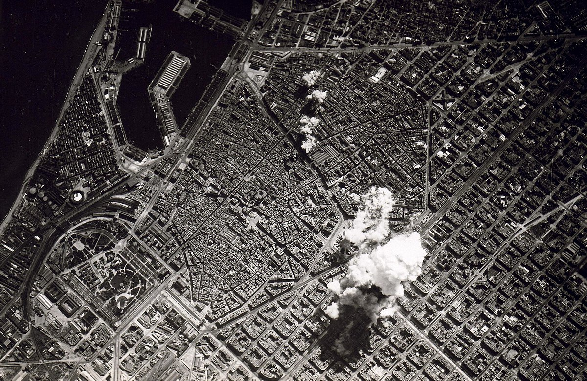 | 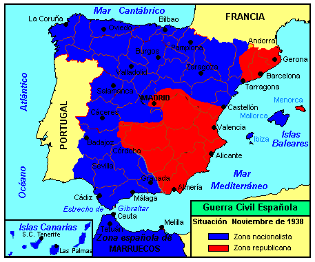 |
| Alicante - L’ultima resistenza Repubblicana | Alicante, Comunità Valenciana | Resa delle ultime forze repubblicane | Tra la fine di marzo e l'inizio di aprile 1939, con le forze repubblicane ormai sconfitte in quasi tutta la Spagna, migliaia di sostenitori della Repubblica si rifugiarono nel porto della città. Soldati, civili, intellettuali e funzionari governativi si radunarono nel disperato tentativo di fuggire dal paese. La speranza era quella di essere evacuati da navi straniere, in particolare britanniche e francesi, che potessero portarli in salvo lontano dalla vendetta delle truppe nazionaliste di Francisco Franco. Il porto di Alicante divenne presto un simbolo di disperazione. Le poche imbarcazioni disponibili furono rapidamente prese d'assalto, ma si rivelarono insufficienti per trasportare la grande massa di rifugiati. Alcune navi furono trattenute dalle potenze straniere per motivi diplomatici, lasciando migliaia di persone intrappolate senza possibilità di fuga. Con l'arrivo delle truppe franchiste, il porto si trasformò in una trappola. Coloro che non riuscirono a partire furono catturati, arrestati o giustiziati sul posto. Nei giorni successivi, migliaia di prigionieri furono internati nel campo di concentramento di Alicante, allestito rapidamente per contenere i rifugiati. La resa di Alicante segnò la fine della Guerra Civile Spagnola e l'inizio di un periodo di dittatura e repressione sotto Francisco Franco. Per i repubblicani, fu un momento di sconfitta definitiva, accompagnato dall'esilio di migliaia di persone e dalla persecuzione di coloro che rimasero in Spagna. | Fine Marzo 1939 | 1 Aprile 1939 | Sconosciuto con certezza | Sconosciuto con certezza | Repubblicani: Civili e truppe in fuga Nazionalisti: Esercito di Francisco Franco | Francisco Franco, Rifugiati repubblicani senza una leadership centrale | Fine della Guerra Civile Spagnola Inizio della dittatura franchista Esilio di migliaia di repubblicani e persecuzioni per chi rimase | Alicante è oggi una città dinamica e turistica sulla Costa Blanca, ma conserva il ricordo di quegli eventi tragici attraverso memoriali e testimonianze storiche. Il porto, teatro della disperazione repubblicana, è ora un luogo simbolo della memoria storica. | 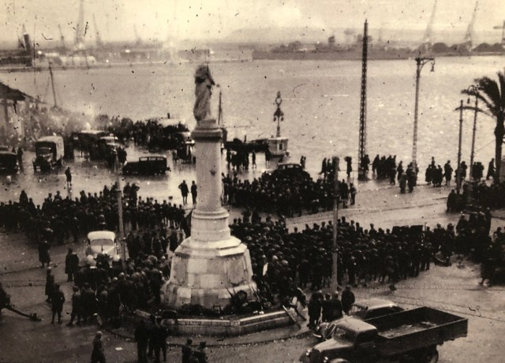 | 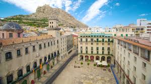 | 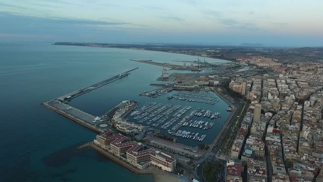 |
Wireframes
Wireframes per rappresentare il layout grafico dell'applicazione.


Il progetto
Contiene le credenziali di accesso e il link al progetto finale.